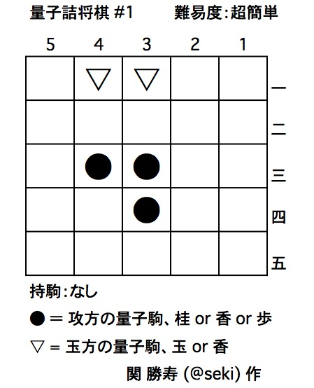

問題1の解答です。
▲４一●行成（成香）まで１手詰め
初形では、玉方の玉が確定していない。どちらかの量子駒を取ることで、玉が確定する。また、取らなければ確定しない。確定しなければ王手にならないので、必ず駒を取らなければならない。駒の取り方は、４三の●で取るか、３三の●で取るかで2通り、それぞれ桂と香の可能性があり、それぞれどちらの▽も取ることができるので、全部で4通りの可能性がある。その中で、玉方がどのように防いでも次に玉を取られてしまう、つまり詰むのは、４三の●で４一の▽を取る手のみである。この動きで、この駒が香車であることが確定し、また裏に成る事で成香に確定する。取った▽は香に確定して、３一の▽が玉に確定する。玉に確定した駒に成香で王手をかけ、３三と３四の●はそれぞれ桂または歩になるので、玉の逃げ場がなくなって詰みとなる。
とても簡単な問題なので、量子詰将棋のルールを理解するための例題となるであろう。ただし、詰め上がりで攻め方に持駒が余る「駒余り」は、詰将棋では通常「不完全作」として扱われる。